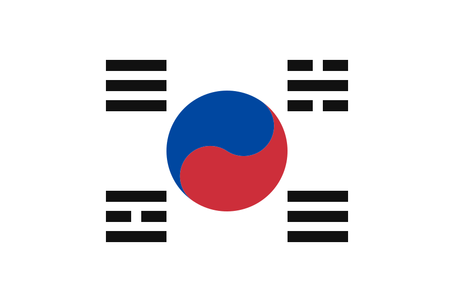
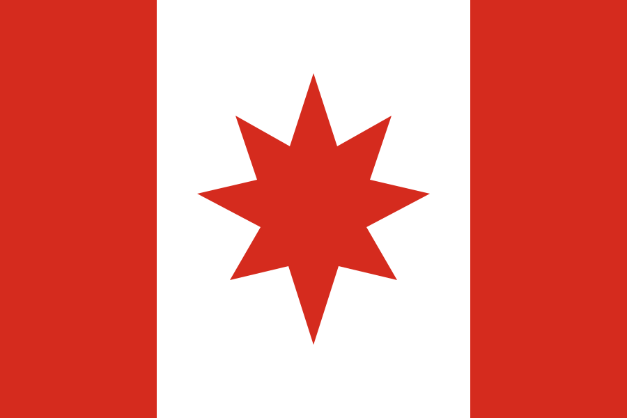
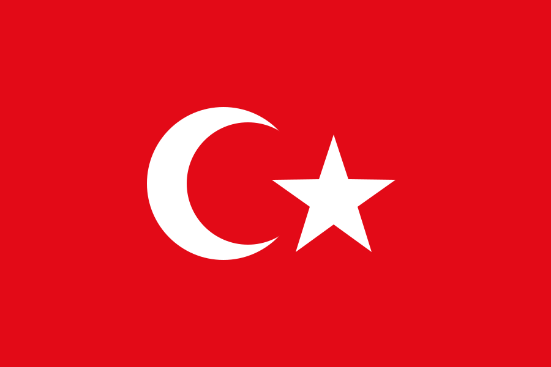
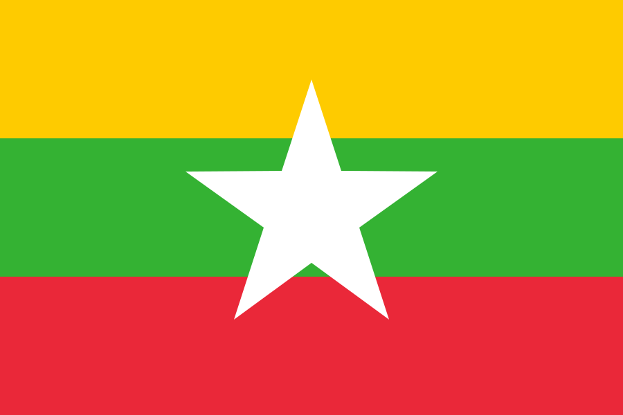

Pakistan
Built a strong foundation in agricultural engineering, irrigation and drainage, laboratory training, composting systems, and applied farm technology research.
Experience
Research experience spanning agricultural engineering, climate databases, water systems, AI forecasting, greenhouse environmental monitoring, and smart agriculture.
Built a strong foundation in agricultural engineering, irrigation and drainage, laboratory training, composting systems, and applied farm technology research.
Advanced AI-based precipitation forecasting, climate database development, CMIP6 analysis, ENSO impact studies, and data science for agricultural planning.

Currently developing research around water quality measurement, big data, greenhouse cultivation systems, river-basin modeling, smart agriculture, and environmental prediction.
Global Collaboration
Agricultural engineering, irrigation, composting, and applied farm systems.
Climate modeling, rainfall forecasting, CMIP6 analysis, and crop-water studies.
Greenhouse agriculture, water-quality data, river basins, and environmental AI.
Sustainable agriculture, biochar, agri-engineering, and environmental technology collaborations.
Environmental remediation, carbon materials, water systems, and data-driven sustainability research.

CanadaHydrology, watershed modeling, water resources, and agricultural engineering connections.

TurkeyScientific conference outputs and international academic dissemination.

MyanmarHydrological modeling, streamflow analysis, and regional climate collaboration.
Appointments
Gyeongsang National University, Republic of Korea
Water quality measurement, big data, and greenhouse water circulation systems.King Mongkut's University of Technology Thonburi, Thailand
Soil and climate databases using numerical weather prediction and data science systems.MNS University of Agriculture, Multan, Pakistan
Design and development of compost windrow turning systems for soil nutrient enrichment.MNS University of Agriculture, Multan, Pakistan
Teaching, laboratory instruction, training, and agricultural engineering support.Professional Service